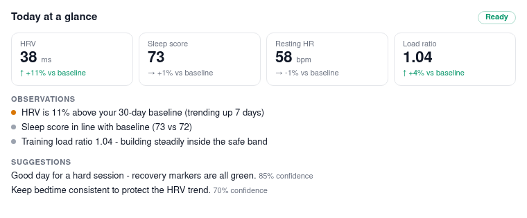

MCP Server
polar-flow-server ships a built-in Model Context Protocol server, so any MCP-capable AI assistant (Claude Code, Claude Desktop, and a growing list of others) can query your health data and reason over it:
"How has my sleep trended this month compared to my baseline?" "Should I train hard today?" "Any signs I'm getting ill?"
The server speaks MCP protocol revision 2026-07-28 (stateless streamable HTTP) and still serves older 2025-era clients. It runs inside the main server process — no sidecar, nothing extra to deploy — at:
https://your-server.example.com/mcp
Authentication
Two ways in, and the right one depends on the client:
OAuth sign-in (the "Connect" button)
With BASE_URL set (self-hosted mode), the server is a full OAuth 2.1
authorization server: MCP clients discover it via the standard metadata
documents, register themselves dynamically, and send you through a real
sign-in — your admin login plus a consent screen — instead of pasting keys.
Issued tokens are scoped to the connected user, expire after an hour
(refresh tokens rotate), and every connected app is listed in
Settings → Connected Applications with a one-click revoke.
# .env - the public URL becomes the OAuth issuer
BASE_URL=https://your-server.example.com
API keys (headless / scripting)
The same API keys as the REST API always work, sent as an X-API-Key
header or as a bearer token. Create one in the admin dashboard
(Settings → API Keys). Scoping is identical to the REST API and enforced
before any MCP protocol handling:
- User-scoped keys can only ever read their own user's data. Tools need
no
user_idargument — the key decides. - Service-level keys may pass an explicit
user_idtool argument on multi-user installs, and default to the connected user otherwise.
Rate limits are shared with the REST API (per key, per hour).
Connecting a client
Claude Desktop / claude.ai (OAuth)
Add a custom connector with URL https://your-server.example.com/mcp and
click Connect — your browser opens the server's login, you approve the
consent screen, done. No keys to copy.
Claude Code
# OAuth (with BASE_URL configured): authenticate interactively
claude mcp add polar-health https://your-server.example.com/mcp --transport http
# Or with an API key
claude mcp add polar-health https://your-server.example.com/mcp \
--transport http \
--header "X-API-Key: pfk_your_key_here"
Other clients
Any MCP client speaking streamable HTTP works: OAuth via the standard discovery chain, or an API key as a bearer/header if the client supports fixed credentials.
Verify
Ask the assistant something like "use polar-health to summarize how I'm
doing" — it should call get_health_insights and answer with your real
numbers.
Tools
| Tool | What it returns |
|---|---|
get_health_insights |
The one-shot assessment: current metrics vs personal baselines, trends, patterns, anomalies, plain-language observations and suggestions |
get_sleep |
Nightly sleep records: score, stage breakdown, overnight HRV/HR/breathing/skin-temp |
get_recovery |
Nightly recharge (ANS charge, HRV) and cardio load (strain vs tolerance) |
get_activity |
Daily steps, calories, distance, active minutes, activity score |
get_exercises |
Workout history; pass exercise_id for one workout's full detail |
get_biosensing |
One stream per call via metric: spo2, ecg, body_temperature, skin_temperature, heart_rate, alertness, bedtime |
get_baselines |
Personal rolling averages and IQR anomaly bounds per metric |
get_patterns |
Stored pattern analyses (sleep-HRV correlation, overtraining risk, trends) plus a live anomaly check |
trigger_sync |
Starts a background sync from Polar (honours the in-progress guard and Polar rate-limit cooldowns) |
get_sync_status |
Whether a sync is running, the last sync's audit record, current Polar rate-limit state |
Tool descriptions are written for the model — units, semantics, and when to use which tool — so assistants generally pick sensibly without prompting.
Rendered cards (MCP Apps)
In clients that support the MCP Apps extension
(claude.ai, Claude Desktop, VS Code, and others), get_health_insights
renders a Today at a glance card right in the conversation: current
metrics vs your personal baselines, observations, and suggestions, following
the client's light/dark theme.

The first time, the client asks permission to display the app. Clients without Apps support (e.g. Claude Code) simply get the tool's normal structured result — the card is progressive enhancement, never the data channel.The tool list order is stable and tools/list carries a one-hour cache
hint (ttlMs), so client-side prompt caches stay warm across calls.
Notes for operators
/mcpsits behind the same security-header middleware as the rest of the app, and is excluded from CSRF (it is API-key authenticated JSON-RPC, not a browser form target).- Unauthenticated requests are rejected at the HTTP layer (401/429) without touching the MCP protocol stack.
- The endpoint works offline/on a LAN like the rest of the server — there are no third-party calls involved.
- Long-running sync is exposed as trigger + poll (
trigger_sync→get_sync_status). When the MCP Tasks extension (SEP-2663) lands in the official SDK, sync will adopt it.